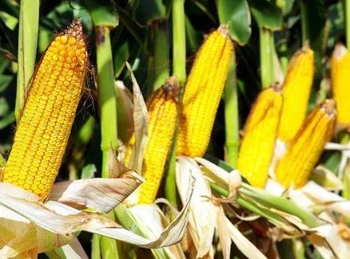

<div class="bg-2paleta h-screen">
    <div class="container  xl:max-w-6xl mx-auto p-7 bg-2paleta h-auto">
        <div class="container bg-amarilloclaro grid-rows-2 items-center justify-center">
            <div class=" grid-info grid-flow-col gap-4 p-4 ">
                <div class="flex ">
                    <div
                        class="grid grid-flow-col bg-white rounded text-base text-cafeLogo min-w-full  justify-items-end p-3 self-center">

                        <div class="col-span-1 flex justify-center">
                            
                        </div>
                        <div class="col-span-1 pl-3 " style=" min-width: 300px;">
                            <p class="">
                                El maíz o <i>zea mays</i> es un cereal, una planta gramínea americana, que se caracteriza por
                                tener tallos largos y macizos (y no huecos como sus parientes más cercanos) al final de
                                los cuales se dan espigas o mazorcas (inflorescencias femeninas), con sus semillas o
                                granos de maíz dispuestos a lo largo de su eje.
                            </p>
                            <p>
                                También se llama maíz (o choclo) a dichas mazorcas e incluso a sus granos una vez
                                extraídos.
                            </p>
                            <p>
                                Se trata de una fuente alimenticia sumamente popular, sobre todo en el continente
                                americano, que suele molerse para hacer harinas (y elaborar diversos platos con ellas,
                                desde arepas hasta tortillas).
                            </p>
                            <p>
                                Su nombre proviene del vocablo taino mahís, que traduce literalmente “lo que sustenta la
                                vida”.

                            </p>
                        </div>
                    </div>
                </div>

            </div>
            <div class="grid grid-cols-11   grid-flow-col  px-4 pb-4">
                <div class=" col-span-5   flex justify-center">
                    <div
                        class="grid grid-flow-row bg-white rounded text-base text-cafeLogo min-w-full pt-3 justify-items-end p-2 self-center">
                        <h2 class="justify-self-center">Información actual del huerto</h2>
                        <span class="justify-self-start">Tipo de huerto:</span>
                        <p class="">Huerto de maíz</p>
                        <span class="justify-self-start">Nivel de luz solar:</span>
                        <p class="">{{sol}}</p>
                        <span class="justify-self-start">Temperatura:</span>
                        <p class="">{{temperatura}}°C</p>
                        <span class="justify-self-start">Semana:</span>
                        <p class="">6/15</p>
                        <span class="justify-self-start">Fecha de último riego:</span>
                        <p class="">29 de agosto de 2022</p>
                    </div>
                </div>

                <div class="col-start-7 col-span-5  flex justify-center">
                    <div
                        class="grid grid-flow-row bg-white rounded text-base text-cafeLogo min-w-full pt-3 justify-items-end p-2 self-center">
                        <h2 class="justify-self-center">Información ideal del huerto</h2>
                        <span class="justify-self-start">Tipo de huerto:</span>
                        <p class="">Huerto de maíz</p>
                        <span class="justify-self-start">Nivel de luz solar:</span>
                        <p class="">200</p>
                        <span class="justify-self-start">Temperatura:</span>
                        <p class="">20°C a 30°C</p>
                        <span class="justify-self-start">Semana:</span>
                        <p class="">6/15</p>
                        <span class="justify-self-start">Frecuencia de riego:</span>
                        <p class="">Diaria</p>
                    </div>
                </div>
            </div>
        </div>
    </div>
</div>